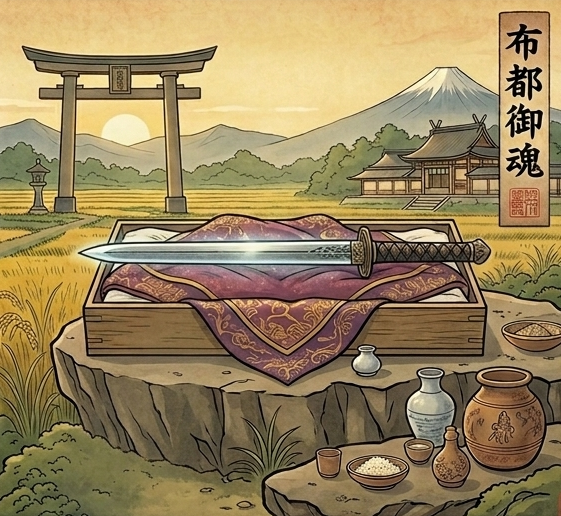

ゆき様は本来
自分の芯を持って
潔く立てる方です。
ご自分の心にあるものを
ねじまげず
真っ直ぐに掴みに行ける
そんな鋭さをお持ちです。
中途半端なまま
ずるずる時を重ねることが
本当は得意ではない。
あの方との形に
ちゃんと答えを出したい。
そんな真っ直ぐさが
ゆき様の中にはあります。
それなのに
なぜあの方との関係だけは
こんなにも答えが視えてこないのか。
ゆき様には
繊細さや内側の世界を持つ人
壊れやすい想いを
そっと扱いたいと感じる
という性質があります。
「気持ちが残っているなら
切り捨てたくない」
「あの方の想いを
無下にしたくない」。
他の方なら潔く手放せる縁が
ゆき様にとっては逆に
あの方を
「離せない人」
にしてしまっている。
だから今
「スッキリ答えを出したい自分」と
「あの方と切れない自分」が
ゆき様の中でぶつかって
このご縁の置きどころを
定めさせてくれないんです。
でも、大丈夫です。
その答えの出し方を
あなたを守る神様が
ちゃんと視せてくれています。
あなたを守っているのは、
布都御魂神
(ふつのみたまのかみ)。
霊剣を司る神様です。

迷いを断ち切る鋭さと
真っ直ぐ進む強さを持つ
神様の加護を受けているので
ゆき様はこれまでも
人生の大事な場面で
ご自分の道を
潔く選び取って
こられたはずです。
あの方は
水晶のように透き通る
銀色のオーラを持っています。
ただ、その透明さの奥に
「ご自分の中の本音を
ご自分でも掴みきれない方」
という性質を持っています。
だからあの方は
ゆき様に会いたい気持ちと
踏み込めない気持ちの
両方を抱えたまま
月に一度の時間に
逃げ込んでいます。
「終わらせたい」のではなく
答えを
出せずにいる時間です。
その時間の中で
ゆき様の存在が
あの方にとって
どこに置かれているのか。
あの方の心が
ゆき様に
真っ直ぐ向き直る瞬間は
いつ訪れるのか。
このご縁が
「曖昧な月一」から
動き始めるのは
いつなのか。
私には、視えています。
ただ、これは
守護神からお預かりしている
ゆき様のこれからを動かす
重たい言葉です。
本式守護霊視鑑定の場で
丁寧にお伝えさせて
いただきますね。
ゆき様の中で起きている
ぶつかりは
時間が経てば自然に片付くもの
ではありません。
曖昧な関係のまま
今日と同じ毎日を
重ねていったその先で。
ゆき様が
「ご自分の人生を
真ん中に置けている自分」
でいられるか
「あの方を最優先のまま
苦しんでいる自分」
でいるか。
その差は、今この瞬間に
ゆき様が「自分の状態を
正しく知るか」で決まります。
あの方の中でも
ゆき様の存在は少しずつ
「いつでも会える人」
として景色に馴染んでいきます。
そうなる前に
ゆき様にちゃんと
知っていただきたいことが
私には視えています。
本式守護鑑定で
ゆき様にお渡しするのは
水晶のような透明さの奥で
あの方が今ゆき様のことを
どう想っているのか。
その心の奥を
ひとつひとつ視て
お伝えします。
月に一度のこの関係が
これから先
どんな形に動いていくのか。
守護神の声から
ひとつひとつ
お伝えします。
ゆき様の中に本来ある
潔く選び取る力を
このご縁の中で
どう使えばいいのか。
具体的にお伝えします。
あの方の透明さの中に
ゆき様の場所が
ちゃんと立ち上がるために
今日からゆき様にできる
守護を高める方法を
お渡しします。
ゆき様ご自身の手で
未来を選び取るための鑑定です。
その一歩を
ここから踏み出してください。
今、ゆき様のために
運命の扉は最も大きく
開かれています。
この巡り合わせは、
残念ながら永遠ではありません。
私からのこのお手紙を
受け取ってから24時間以内に
一歩踏み出すと、
止まっていた運命は、
最もなめらかに動き始めます。
ご自身の手で
最高の未来を選び取りたいと
心から願うゆき様へ。
通常20,000円のところ、
今回は特別価格9,800円。
本式守護霊視鑑定を
心を込めてお渡しします。
1日限定3名までしか
お受けできません。
リンク先が表示されない場合、
本日分は締切となっていますご了承ください。
お申し込み後、
購入時のお名前をお知らせください。
1日以内に、
あなただけの鑑定書をお届けします。
ゆき様の物語が、
ゆき様らしい結末を
迎えることを、
私は守護の声を通して、
すでに知っています。
ご縁に
心から感謝を込めて。